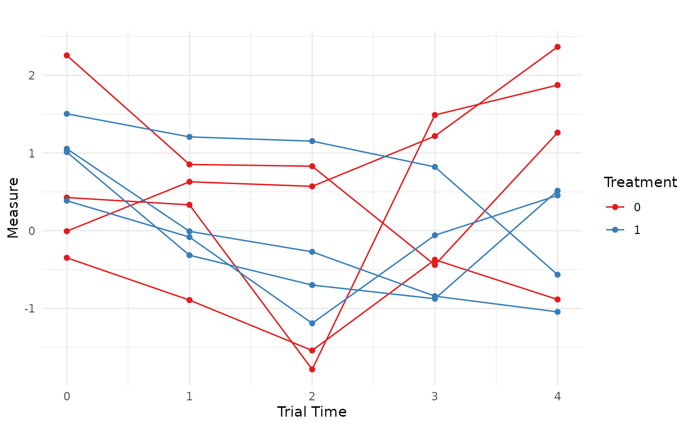

Simulating Longitudinal Data with `endpoints`
Colin Longhurst
2026-03-30
Source:vignettes/longitudinal_data.Rmd
longitudinal_data.RmdIntroduction
There are two ways in which the endpoints package can be
used to generate longitudinal data. The first is by directly generating
correlated outcomes and the second is by generating random random
effects. Examples of each method can be found below.
Correlated Responses
Longitudinal Data Only
Suppose we want to simulate a longitudinal continuous outcome measured at a fixed set of visits, with trajectories that differ by treatment group. For illustration, consider the marginal mean model
where is the treatment indicator and the residual vector follows
Here is the standard AR(1) correlation structure: measurements closer in time are more strongly correlated. More explicitly, this can be written as
In this example we use:
- correlation ,
- visits (baseline + 4 follow-up visits),
- a constant control-group mean over time,
- a non-linear treatment effect across visits,
- residual SD .
Step 1: Specify the within-subject correlation
We encode the AR(1) structure directly using
corr_make():
N_visits <- 5
rho <- 0.5
corMat_5_visits <- corr_make(
num_endpoints = N_visits,
values = rbind(
c(1,2,rho), c(1,3,rho^2), c(1,4,rho^3),c(1,5,rho^4),
c(2,3,rho), c(2,4,rho^2), c(2,5,rho^3),
c(3,4,rho), c(3,5,rho^2),
c(4,5,rho)
)
)Step 2: Treat each visit as a “correlated endpoint”
Although endpoint_details typically describes distinct
endpoints, we can also use it to represent distinct visits of a single
longitudinal outcome. Each entry below specifies the marginal mean at a
visit for control, plus the visit-specific treatment effect.
sigma <- 0.95 # constant residual error
baseline <- list(
endpoint_type = "continuous",
baseline_mean = 0.45,
trt_effect = 0, # no baseline difference
sd = sigma
)
v1 <- list(endpoint_type = "continuous", baseline_mean = 0.45, trt_effect = -0.10, sd = sigma)
v2 <- list(endpoint_type = "continuous", baseline_mean = 0.45, trt_effect = -0.15, sd = sigma)
v3 <- list(endpoint_type = "continuous", baseline_mean = 0.45, trt_effect = -0.25, sd = sigma)
v4 <- list(endpoint_type = "continuous", baseline_mean = 0.45, trt_effect = -0.40, sd = sigma)Step 3: Simulate wide data with makeData()
correlated_visits_wide <- makeData(
correlation_matrix = corMat_5_visits,
SEED = 321,
sample_size_per_group = 2000, # large n to check asymptotic behavior
endpoint_details = list(baseline, v1, v2, v3, v4)
)
knitr::kable(
head(correlated_visits_wide$data),
caption = "Wide data returned by makeData() (one column per visit)"
)| Cont_1 | Cont_2 | Cont_3 | Cont_4 | Cont_5 | trt |
|---|---|---|---|---|---|
| 0.9136632 | 1.0368596 | -0.7689901 | -0.0544426 | -0.3515110 | 0 |
| 0.0962094 | -0.6043165 | 0.0005888 | 1.8262149 | 1.1259233 | 0 |
| 0.3072042 | 0.0331833 | 0.3730946 | 0.4594899 | 1.7044212 | 0 |
| -0.8548549 | -0.9062046 | -0.6185425 | -0.4540785 | 0.4544898 | 0 |
| -0.5574394 | -1.0931459 | 0.3318037 | -0.0710577 | 0.6245473 | 0 |
| 0.6971626 | 1.1483199 | 1.5965616 | 0.8228409 | -0.0226198 | 0 |
At this stage we have a standard “wide” format dataset: each visit
appears as a separate column (Cont_1, …,
Cont_5). The key observation is that a collection of
correlated endpoints can be interpreted as repeated measures once we
reshape the data.
Step 4: Convert wide long
library(tidyverse)
correlated_visits_long <-
correlated_visits_wide$data %>%
rowid_to_column('ID') %>% # keep track of patient
gather(.,key="visit",value='Measure',-trt,-ID) %>% # convert wide to long data
mutate(ID = as.factor(ID),
# clean up names
visit = case_match(visit,
"Cont_1" ~ 0,
"Cont_2" ~ 1,
"Cont_3" ~ 2,
"Cont_4" ~ 3,
"Cont_5" ~ 4)) %>%
arrange(ID)The long data now looks like a typical longitudinal dataset:
knitr::kable(
head(correlated_visits_long),
caption = "Longitudinal data after reshaping to long format"
)| ID | trt | visit | Measure |
|---|---|---|---|
| 1 | 0 | 0 | 0.9136632 |
| 1 | 0 | 1 | 1.0368596 |
| 1 | 0 | 2 | -0.7689901 |
| 1 | 0 | 3 | -0.0544426 |
| 1 | 0 | 4 | -0.3515110 |
| 2 | 0 | 0 | 0.0962094 |
Step 5: Validate the intended effects and correlation
To verify that the simulated data reflect the intended mean structure
and AR(1) correlation, we fit a marginal model using
geeM::geem():
ge1 <- geeM::geem(
Measure ~ factor(visit) * trt,
id = ID,
corstr = "ar1",
data = correlated_visits_long,
family = gaussian
)Inspecting the output from the model, we observe that the simulation proceeded correctly:
est_effects <- c(
round(summary(ge1)$beta[7:10], 3), # treatment effects at visits 1-4 (vs baseline)
round(summary(ge1)$phi, 2), # residual SD (see note below)
round(summary(ge1)$alpha, 2) # AR(1) correlation estimate
)
true_effects <- c(-0.10, -0.15, -0.25, -0.40, sigma, rho)
labels_latex <- c(
"$\\beta_{\\mathrm{trt},1}$",
"$\\beta_{\\mathrm{trt},2}$",
"$\\beta_{\\mathrm{trt},3}$",
"$\\beta_{\\mathrm{trt},4}$",
"$\\sigma$",
"$\\rho$"
)
out_tbl <- data.frame(
Parameter = labels_latex,
True = true_effects,
Estimated = est_effects
)
knitr::kable(
out_tbl,
escape = FALSE,
digits = 3,
caption = "True vs. estimated longitudinal treatment effects and correlation parameters."
)| Parameter | True | Estimated |
|---|---|---|
| -0.10 | -0.123 | |
| -0.15 | -0.179 | |
| -0.25 | -0.260 | |
| -0.40 | -0.430 | |
| 0.95 | 0.910 | |
| 0.50 | 0.510 |
(Note: is the marginal residual SD in )
We now have a longitudinal data set with the correct data characteristics to use in simulation. Finally, we can visualize a small set of subject trajectories:
set.seed(888)
IDs = c(sample(1:4000,8))
correlated_visits_long %>%
filter(.,ID %in% IDs) %>%
ggplot(.,aes(x = visit,y=Measure,group = ID,color = as.factor(trt)))+
geom_line() +
geom_point() +
labs(title = "",
x = "Trial Time",
y = "Measure",
color = "Treatment") +
theme_minimal()+
scale_color_brewer(palette = "Set1")
Longitudinal Data with Other Endpoints
To correlate longitudinal measurements with additional endpoints (e.g., a time-to-event outcome), we expand:
- the correlation matrix to include the new endpoint(s), and
- the
endpoint_detailslist to include a TTE specification,
then reshape only the longitudinal columns while keeping the additional endpoint columns in place.
Example: add a non-fatal hospitalization endpoint (TTE)
Here we assume an exchangeable within-visit correlation for simplicity, and specify correlations between hospitalization time and each visit.
rho <- 0.15
corMat_long_w_hosp <- corr_make(
num_endpoints = 6,
values = rbind(
# exchangeable correlation among visits (1...5)
c(1,2,rho), c(1,3,rho), c(1,4,rho), c(1,5,rho),
c(2,3,rho), c(2,4,rho), c(2,5,rho),
c(3,4,rho), c(3,5,rho),
c(4,5,rho),
# correlations between visits and hospitalization (endpoint 6)
c(1,6,0.00), c(2,6,0.10), c(3,6,0.20), c(4,6,0.25), c(5,6,0.15)
)
)We specify hospitalization as a non-fatal TTE endpoint (no censoring here for simplicity):
hosp <- list(
endpoint_type = "tte",
baseline_rate = 1/2,
trt_effect = log(0.80),
fatal_event = FALSE
)Simulate the data:
wide_w_hosp <- makeData(
correlation_matrix = corMat_long_w_hosp,
SEED = 123,
sample_size_per_group = 2000,
endpoint_details = list(baseline, v1, v2, v3, v4, hosp)
)It is often helpful to verify the simulated marginals and (approximate) correlation structure before reshaping:
summary(wide_w_hosp)Show summary(wide_w_hosp)
n_arms: 2 Target correlation: [,1] [,2] [,3] [,4] [,5] [,6] [1,] 1.00 0.15 0.15 0.15 0.15 0.00 [2,] 0.15 1.00 0.15 0.15 0.15 0.10 [3,] 0.15 0.15 1.00 0.15 0.15 0.20 [4,] 0.15 0.15 0.15 1.00 0.15 0.25 [5,] 0.15 0.15 0.15 0.15 1.00 0.15 [6,] 0.00 0.10 0.20 0.25 0.15 1.00 Estimated correlation (by arm): arm_0: Cont_1 Cont_2 Cont_3 Cont_4 Cont_5 TTE_1 Cont_1 1.000 0.165 0.126 0.137 0.143 -0.023 Cont_2 0.165 1.000 0.169 0.188 0.088 0.095 Cont_3 0.126 0.169 1.000 0.179 0.151 0.211 Cont_4 0.137 0.188 0.179 1.000 0.158 0.220 Cont_5 0.143 0.088 0.151 0.158 1.000 0.155 TTE_1 -0.023 0.095 0.211 0.220 0.155 1.000 arm_1: Cont_1 Cont_2 Cont_3 Cont_4 Cont_5 TTE_1 Cont_1 1.000 0.134 0.104 0.129 0.154 -0.008 Cont_2 0.134 1.000 0.165 0.150 0.154 0.082 Cont_3 0.104 0.165 1.000 0.111 0.095 0.178 Cont_4 0.129 0.150 0.111 1.000 0.081 0.215 Cont_5 0.154 0.154 0.095 0.081 1.000 0.122 TTE_1 -0.008 0.082 0.178 0.215 0.122 1.000 Continuous endpoints (endpoint x arm): endpoint arm input_baseline_mean input_sd input_trt_effect est_baseline_mean 1 Cont_1 0 0.45 0.95 0.00 0.4422988 2 Cont_1 1 0.45 0.95 0.00 0.4422988 3 Cont_2 0 0.45 0.95 0.00 0.4430401 4 Cont_2 1 0.45 0.95 -0.10 0.4430401 5 Cont_3 0 0.45 0.95 0.00 0.4433510 6 Cont_3 1 0.45 0.95 -0.15 0.4433510 7 Cont_4 0 0.45 0.95 0.00 0.4581812 8 Cont_4 1 0.45 0.95 -0.25 0.4581812 9 Cont_5 0 0.45 0.95 0.00 0.4062304 10 Cont_5 1 0.45 0.95 -0.40 0.4062304 est_trt_effect est_resid_sd 1 0.00000000 0.9461781 2 0.03037149 0.9539886 3 0.00000000 0.9565689 4 -0.06938598 0.9278077 5 0.00000000 0.9566875 6 -0.16858624 0.9452120 7 0.00000000 0.9606973 8 -0.30797473 0.9504972 9 0.00000000 0.9740075 10 -0.36397017 0.9360521 TTE endpoints (endpoint x arm): endpoint arm censor_col input_baseline_rate input_trt_logHR input_trt_HR 1 TTE_1 0 Status_1 0.5 0.0000000 1.0 2 TTE_1 1 Status_1 0.5 -0.2231436 0.8 est_trt_logHR est_trt_HR obs_event_rate exp_rate 1 0.0000000 1.0000000 1 0.4953735 2 -0.1602039 0.8519701 1 0.4204407
Now reshape only the longitudinal columns, leaving the TTE endpoint intact:
long_w_hosp <- wide_w_hosp$data %>%
rowid_to_column("ID") %>%
pivot_longer(
cols = starts_with("Cont_"),
names_to = "visit",
values_to = "Measure"
) %>%
mutate(
ID = as.factor(ID),
visit = dplyr::case_match(
visit,
"Cont_1" ~ 0,
"Cont_2" ~ 1,
"Cont_3" ~ 2,
"Cont_4" ~ 3,
"Cont_5" ~ 4
)
) %>%
arrange(ID, visit)
head(long_w_hosp, 10) %>% knitr::kable()| ID | TTE_1 | trt | Status_1 | visit | Measure |
|---|---|---|---|---|---|
| 1 | 1.0869006 | 0 | 1 | 0 | 0.3806072 |
| 1 | 1.0869006 | 0 | 1 | 1 | 0.5466348 |
| 1 | 1.0869006 | 0 | 1 | 2 | 1.1108121 |
| 1 | 1.0869006 | 0 | 1 | 3 | 0.7523445 |
| 1 | 1.0869006 | 0 | 1 | 4 | 0.1319884 |
| 2 | 0.6876578 | 0 | 1 | 0 | 1.1257238 |
| 2 | 0.6876578 | 0 | 1 | 1 | -0.7377198 |
| 2 | 0.6876578 | 0 | 1 | 2 | 1.5131801 |
| 2 | 0.6876578 | 0 | 1 | 3 | -0.4723545 |
| 2 | 0.6876578 | 0 | 1 | 4 | 1.1003118 |
This produces a simulated data set with a TTE endpoint that is correlated with a longitudinal measurement:
Random Effects
An alternative way to generate longitudinal data using the
endpoints framework is to simulate subject-specific random
effects and then use those latent quantities inside a separate
longitudinal data-generating process. This approach is often more
natural when the longitudinal outcome is intended to follow a
mixed-effects model, as it directly represents patient-level
heterogeneity through random intercepts and slopes.
For example, consider the following longitudinal model with a random intercept and random slope:
Here: - indicates treatment group ( control, treatment), - indexes subjects, - indexes time, - is the subject-specific random intercept, - is the subject-specific random slope.
In this formulation, the correlation in repeated measurements is induced through the shared random effects rather than by directly specifying a within-subject correlation matrix across visits.
Two-stage Simulation Strategy
The basic idea is to proceed in two steps:
Use
makeData()to simulate the subject-level latent variables (e.g., random intercepts, random slopes, and any additional endpoints such as TTE outcomes).Use those subject-level quantities inside a second helper function that expands the data over time and generates the repeated measurements.
This approach is especially useful when the longitudinal outcome must
be correlated with other endpoints (e.g., hospitalization or mortality),
since makeData() can generate all of those latent
subject-level quantities jointly.
Example: Random Effects & Two TTE Endpoints
In this example we simulate a trial with:
- one fatal TTE endpoint: all-cause mortality (ACM),
- one non-fatal TTE endpoint: hospitalization (HP),
- one latent random intercept,
- one latent random slope.
We first define the correlation matrix, which encodes the dependence among these four subject-level quantities:
cor_rf <- corr_make(num_endpoints = 4,
values = rbind(
c(1,2,.2), # ACM ~ HP
c(1,3,.15), # ACM ~ random intercept
c(1,4,.1), # ACM ~ random slope
c(2,3,.1), # HP ~ random intercept
c(2,4,.05), # HP ~ random slope
c(3,4,.3) # random intercept ~ slope
)
)Next, we specify the two random effects as continuous endpoints centered at 0:
random_intercept <- list(
endpoint_type = "continuous",
baseline_mean = 0,
sd = 0.5
)
random_slope <- list(
endpoint_type = "continuous",
baseline_mean = 0,
sd = 0.25
)We then define the two TTE endpoints:
ACM <- list(
endpoint_type = "tte",
baseline_rate = 1/4,
trt_effect = log(0.80),
censoring_rate = 1/8,
fatal_event = TRUE
)
HP <- list(
endpoint_type = "tte",
baseline_rate = 1/2,
trt_effect = log(0.80),
censoring_rate = 1/15,
fatal_event = FALSE
)Now we use makeData() to generate the subject-level
dataset, where each subjects has their latent random effects
generated:
rf_data <- makeData(
correlation_matrix = cor_rf,
sample_size_per_group = 1000,
SEED = 888,
endpoint_details = list(ACM,HP,random_intercept,random_slope),
non_fatal_censors_fatal = TRUE,
enrollment_details = list(
administrative_censoring = 4
)
)At this stage, the simulated dataset contains:
- TTE_1: all-cause mortality,
- TTE_2: hospitalization,
- Cont_1: random intercept,
- Cont_2: random slope.
These are all subject-level quantities. The remaining step is to expand the data over time and generate the repeated longitudinal measurements.
Creating the Longitudinal Data
To do this, we use a small helper function that:
- expands each subject across a time grid,
- evaluates a user-supplied linear predictor,
- adds Gaussian residual error,
- optionally censors the longitudinal outcome after a fatal event.
longMaker_lite <- function(data,
time_sequence,
linear_predictor,
residual_error,
censor_longitudinal_data = FALSE) {
expanded_data <- data %>%
rowid_to_column("ID") %>%
tidyr::expand_grid(time = time_sequence) %>%
mutate(linPred = eval(parse(text = linear_predictor)))
expanded_data$response <- expanded_data$linPred +
rnorm(nrow(expanded_data), mean = 0, sd = residual_error)
# If requested, censor longitudinal measurements after the fatal TTE endpoint
# (here using TTE_1 only, for illustration)
if (censor_longitudinal_data) {
expanded_data$response <- ifelse(
expanded_data$time > expanded_data$TTE_1,
NA,
expanded_data$response
)
}
expanded_data
}In the example below, the linear predictor includes:
- a fixed intercept of 10,
- no baseline treatment effect,
- a control-group slope of ,
- a treatment-by-time interaction of +1 ,
- a subject-specific random intercept (
Cont_1), - a subject-specific random slope (
Cont_2 * time).
We first generate the latent longitudinal outcome without censoring, so that we can verify the fixed and random effects separately from the TTE censoring mechanism.
long_rf_data_test <- longMaker_lite(data = rf_data$data,
time_sequence = seq(from=0,to = 2, by = 0.25),
linear_predictor =
"10 + (0*trt) + (-.5*time) + (1*trt*time) + Cont_1 + (Cont_2*time)",
residual_error =1,
censor_longitudinal_data = FALSE
)Validate the Data
We can now fit a linear mixed model to verify that the simulated fixed effects, random effects, and induced correlation structure are behaving as intended:
lme4::lmer(
response ~ trt * time + (time | ID),
data = long_rf_data_test
) %>%
summary(correlation = FALSE)## Linear mixed model fit by REML ['lmerMod']
## Formula: response ~ trt * time + (time | ID)
## Data: long_rf_data_test
##
## REML criterion at convergence: 54565
##
## Scaled residuals:
## Min 1Q Median 3Q Max
## -3.6266 -0.6276 -0.0022 0.6318 3.4589
##
## Random effects:
## Groups Name Variance Std.Dev. Corr
## ID (Intercept) 0.25831 0.5082
## time 0.06888 0.2625 0.27
## Residual 1.00564 1.0028
## Number of obs: 18000, groups: ID, 2000
##
## Fixed effects:
## Estimate Std. Error t value
## (Intercept) 9.99614 0.02526 395.682
## trt 0.01046 0.03573 0.293
## time -0.49682 0.01836 -27.061
## trt:time 0.97304 0.02596 37.477The estimated treatment-by-time interaction, residual variation, and random-effects covariance are close to their data-generating values.
Next, we regenerate the longitudinal data, this time allowing the
fatal event (ACM:TTE_1) to censor future longitudinal
measurements:
long_rf_data_final <- longMaker_lite(data = rf_data$data,
time_sequence = seq(from=0,to = 2, by = 0.25),
linear_predictor =
"10 + (0*trt) + (-.5*time) + (1*trt*time) + Cont_1 + (Cont_2*time)",
residual_error =1,
censor_longitudinal_data = TRUE)This yields a dataset in which the repeated continuous outcome is jointly related to two TTE endpoints through the shared subject-level latent structure, and is additionally truncated after the fatal event.
| ID | TTE_1 | TTE_2 | Cont_1 | Cont_2 | trt | Status_1 | Status_2 | enrollTime | time | linPred | response |
|---|---|---|---|---|---|---|---|---|---|---|---|
| 1 | 4.0000000 | 0.3954673 | 0.6069000 | 0.6532307 | 0 | 0 | 1 | 0 | 0.00 | 10.606900 | 11.859258 |
| 1 | 4.0000000 | 0.3954673 | 0.6069000 | 0.6532307 | 0 | 0 | 1 | 0 | 0.25 | 10.645208 | 11.300007 |
| 1 | 4.0000000 | 0.3954673 | 0.6069000 | 0.6532307 | 0 | 0 | 1 | 0 | 0.50 | 10.683515 | 12.501410 |
| 1 | 4.0000000 | 0.3954673 | 0.6069000 | 0.6532307 | 0 | 0 | 1 | 0 | 0.75 | 10.721823 | 11.860288 |
| 1 | 4.0000000 | 0.3954673 | 0.6069000 | 0.6532307 | 0 | 0 | 1 | 0 | 1.00 | 10.760131 | 9.239832 |
| 1 | 4.0000000 | 0.3954673 | 0.6069000 | 0.6532307 | 0 | 0 | 1 | 0 | 1.25 | 10.798438 | 11.032595 |
| 1 | 4.0000000 | 0.3954673 | 0.6069000 | 0.6532307 | 0 | 0 | 1 | 0 | 1.50 | 10.836746 | 11.883674 |
| 1 | 4.0000000 | 0.3954673 | 0.6069000 | 0.6532307 | 0 | 0 | 1 | 0 | 1.75 | 10.875054 | 10.691956 |
| 1 | 4.0000000 | 0.3954673 | 0.6069000 | 0.6532307 | 0 | 0 | 1 | 0 | 2.00 | 10.913361 | 9.886203 |
| 2 | 0.9638439 | 0.5494779 | -0.2502899 | 0.2564471 | 0 | 0 | 1 | 0 | 0.00 | 9.749710 | 10.748149 |
| 2 | 0.9638439 | 0.5494779 | -0.2502899 | 0.2564471 | 0 | 0 | 1 | 0 | 0.25 | 9.688822 | 10.609906 |
| 2 | 0.9638439 | 0.5494779 | -0.2502899 | 0.2564471 | 0 | 0 | 1 | 0 | 0.50 | 9.627934 | 8.825088 |
| 2 | 0.9638439 | 0.5494779 | -0.2502899 | 0.2564471 | 0 | 0 | 1 | 0 | 0.75 | 9.567045 | 7.266656 |
| 2 | 0.9638439 | 0.5494779 | -0.2502899 | 0.2564471 | 0 | 0 | 1 | 0 | 1.00 | 9.506157 | NA |
| 2 | 0.9638439 | 0.5494779 | -0.2502899 | 0.2564471 | 0 | 0 | 1 | 0 | 1.25 | 9.445269 | NA |
| 2 | 0.9638439 | 0.5494779 | -0.2502899 | 0.2564471 | 0 | 0 | 1 | 0 | 1.50 | 9.384381 | NA |
Comparing the approaches
| Approach | Advantages | Disadvantages |
|---|---|---|
| Correlated endpoints | - No separate data generating process - Only requires correlation parameters (no random effects) - Allows for complicated correlation patterns |
- Must specify correlation parameters in addition to the sub-longitudinal correlation matrix ( is number of additional endpoints) |
| Random effects | - Far fewer correlation parameters to specify - MMRM/mixed models are common in industry - Flexible data generating process - More explicit generative assumptions |
- Requires a second data generating process |